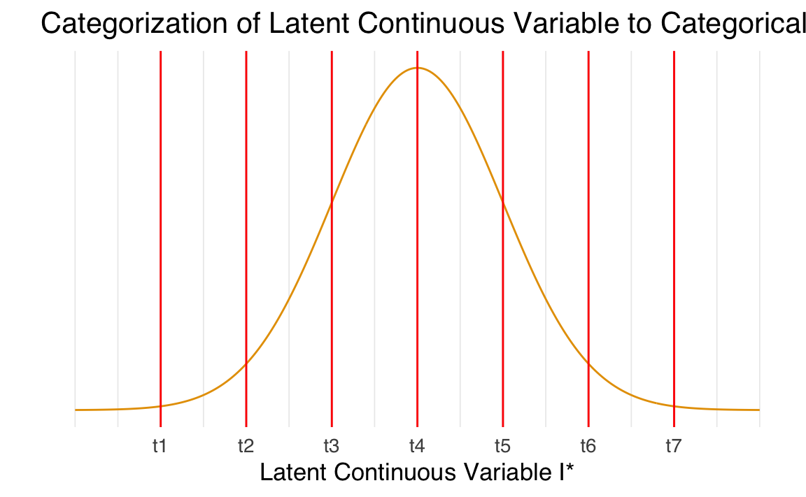

41 Dati non gaussiani e categoriali
- gestire dati categoriali nei modelli CFA.
- Leggere il capitolo Factor Analysis and Principal Component Analysis (Petersen, 2024).
41.1 Introduzione
In questa dispensa abbiamo già discusso l’uso dello stimatore di massima verosimiglianza (ML), largamente utilizzato nell’Analisi Fattoriale Confermativa (CFA) e nei modelli di Structural Equation Modeling (SEM). Questo metodo funziona bene quando i dati sono normalmente distribuiti, ovvero quando la distribuzione delle variabili è simmetrica e segue la classica “curva a campana”.
Tuttavia, se i dati si discostano molto dalla normalità, per esempio con una forte asimmetria o curtosi (distribuzioni molto appuntite o schiacciate), oppure se le variabili non sono su una scala numerica continua (ad esempio, dati binari o ordinali), lo stimatore ML potrebbe non essere adeguato. In questi casi, è meglio usare stimatori alternativi.
41.2 Dati non normali e alternative a ML
Anche se ML è robusto a piccole deviazioni dalla normalità, in situazioni di marcata non normalità possono verificarsi i seguenti problemi:
- Sovrastima della statistica chi-quadrato (\(\chi^2\)): i test per valutare l’adattamento del modello ai dati possono risultare troppo severi.
- Sottostima degli indici di bontà di adattamento: valori come il Tucker-Lewis Index (TLI) e il Comparative Fit Index (CFI) possono sembrare peggiori del reale.
- Errori standard sottostimati: le stime dei parametri del modello possono sembrare più precise di quanto non siano.
Questi problemi diventano più gravi con campioni piccoli. Per evitarli, si possono utilizzare i seguenti stimatori:
41.2.1 1. GLS (Generalized Least Squares)
- Quando usarlo: Adatto se non ci sono dati mancanti.
- Come funziona: Valuta quanto la matrice di covarianza stimata dal modello differisce dalla matrice osservata. Più piccola è questa differenza, meglio il modello si adatta ai dati.
- Interpretazione: Un valore basso della funzione GLS indica un buon adattamento.
41.2.2 2. WLS (Weighted Least Squares)
- Quando usarlo: Ideale per dati non normali o complessi (detto anche stimatore ADF - Asintoticamente Libero da Distribuzione).
- Come funziona: Pesa ogni elemento della matrice di covarianza in modo da considerare l’importanza relativa delle discrepanze.
- Interpretazione: Un valore basso indica che il modello si adatta bene, tenendo conto di questi pesi.
41.2.3 3. DWLS (Diagonally Weighted Least Squares)
- Quando usarlo: Una versione semplificata di WLS.
- Come funziona: Utilizza pesi solo sugli elementi della diagonale della matrice di covarianza, semplificando i calcoli.
- Interpretazione: È più semplice di WLS, ma funziona bene per dati ordinali o binari.
41.2.4 4. ULS (Unweighted Least Squares)
- Quando usarlo: Adatto a situazioni meno complesse.
- Come funziona: Tutti gli elementi della matrice hanno lo stesso peso.
- Interpretazione: È il metodo più semplice, ma meno sofisticato rispetto agli altri.
41.2.5 ML Robusto: un compromesso per dati non normali
Oltre agli stimatori sopra descritti, esiste una variante di ML chiamata ML Robusto (Robust Maximum Likelihood). Questo metodo è pensato per gestire situazioni di forte non normalità:
- Corregge la statistica \(\chi^2\): Evita che i risultati sembrino peggiori di quanto siano.
- Errori standard più precisi: Migliora la stima della precisione dei parametri.
- Indici di adattamento più affidabili: TLI e CFI risultano più accurati.
In sintesi, quando i dati non rispettano le condizioni di normalità, l’uso di stimatori come WLS, DWLS o ML Robusto può garantire risultati più affidabili. Questi metodi considerano le caratteristiche specifiche dei dati, come la distribuzione o la scala, e permettono di valutare meglio l’adattamento del modello. La scelta dello stimatore dipende dal tipo di dati e dal livello di complessità richiesto dall’analisi.
41.3 Un Esempio Concreto
Prendiamo in considerazione un caso pratico. Utilizzeremo i dati sintetici presentati da Brown (2015) nelle tabelle 9.5-9.7 come esempio.
Le statistiche descrittive di questo campione di dati mostrano valori eccessivi di asimmetria e di curtosi.
psych::describe(d)
#> vars n mean sd median trimmed mad min max range skew kurtosis se
#> x1 1 870 1.47 2.17 0 1.01 0 0 8 8 1.51 1.25 0.07
#> x2 2 870 0.82 1.60 0 0.42 0 0 8 8 2.40 5.67 0.05
#> x3 3 870 1.27 2.07 0 0.78 0 0 8 8 1.80 2.34 0.07
#> x4 4 870 1.03 1.93 0 0.54 0 0 8 8 2.16 3.98 0.07
#> x5 5 870 0.61 1.52 0 0.18 0 0 8 8 3.10 9.37 0.05Definiamo un modello ad un fattore e, seguendo Brown (2015), aggiungiamo una correlazione residua tra gli indicatori X1 e X3:
model <- '
f1 =~ x1 + x2 + x3 + x4 + x5
x1 ~~ x3
'Procediamo alla stima dei parametri utilizzando uno stimatore di ML robusto. La sintassi lavaan è la seguente:
fit <- cfa(
model,
data = d,
mimic = "MPLUS",
estimator = "MLM"
)Per esaminare la soluzione ottenuta ci focalizziamo sulla statistica \(\chi^2\) – si consideri la soluzione robusta fornita nell’output.
summary(fit)
#> lavaan 0.6-19 ended normally after 28 iterations
#>
#> Estimator ML
#> Optimization method NLMINB
#> Number of model parameters 16
#>
#> Number of observations 870
#>
#> Model Test User Model:
#> Standard Scaled
#> Test Statistic 25.913 10.356
#> Degrees of freedom 4 4
#> P-value (Chi-square) 0.000 0.035
#> Scaling correction factor 2.502
#> Satorra-Bentler correction (Mplus variant)
#>
#> Parameter Estimates:
#>
#> Standard errors Robust.sem
#> Information Expected
#> Information saturated (h1) model Structured
#>
#> Latent Variables:
#> Estimate Std.Err z-value P(>|z|)
#> f1 =~
#> x1 1.000
#> x2 0.703 0.062 11.338 0.000
#> x3 1.068 0.044 24.304 0.000
#> x4 0.918 0.063 14.638 0.000
#> x5 0.748 0.055 13.582 0.000
#>
#> Covariances:
#> Estimate Std.Err z-value P(>|z|)
#> .x1 ~~
#> .x3 0.655 0.143 4.579 0.000
#>
#> Intercepts:
#> Estimate Std.Err z-value P(>|z|)
#> .x1 1.470 0.074 19.968 0.000
#> .x2 0.823 0.054 15.166 0.000
#> .x3 1.266 0.070 18.043 0.000
#> .x4 1.026 0.065 15.712 0.000
#> .x5 0.607 0.051 11.790 0.000
#>
#> Variances:
#> Estimate Std.Err z-value P(>|z|)
#> .x1 2.040 0.228 8.952 0.000
#> .x2 1.241 0.124 10.019 0.000
#> .x3 1.227 0.169 7.255 0.000
#> .x4 1.458 0.177 8.233 0.000
#> .x5 0.807 0.100 8.063 0.000
#> f1 2.675 0.289 9.273 0.000Per fare un confronto, adattiamo lo stesso modello ai dati usando lo stimatore di ML.
fit2 <- cfa(model, data = d)Notiamo come il valore della statistica \(\chi^2\) ora ottenuto sia molto maggiore di quello trovato in precedenza.
summary(fit2)
#> lavaan 0.6-19 ended normally after 28 iterations
#>
#> Estimator ML
#> Optimization method NLMINB
#> Number of model parameters 11
#>
#> Number of observations 870
#>
#> Model Test User Model:
#>
#> Test statistic 25.913
#> Degrees of freedom 4
#> P-value (Chi-square) 0.000
#>
#> Parameter Estimates:
#>
#> Standard errors Standard
#> Information Expected
#> Information saturated (h1) model Structured
#>
#> Latent Variables:
#> Estimate Std.Err z-value P(>|z|)
#> f1 =~
#> x1 1.000
#> x2 0.703 0.035 20.133 0.000
#> x3 1.068 0.034 31.730 0.000
#> x4 0.918 0.042 21.775 0.000
#> x5 0.748 0.033 22.416 0.000
#>
#> Covariances:
#> Estimate Std.Err z-value P(>|z|)
#> .x1 ~~
#> .x3 0.655 0.091 7.213 0.000
#>
#> Variances:
#> Estimate Std.Err z-value P(>|z|)
#> .x1 2.040 0.128 15.897 0.000
#> .x2 1.241 0.070 17.671 0.000
#> .x3 1.227 0.095 12.942 0.000
#> .x4 1.458 0.090 16.135 0.000
#> .x5 0.807 0.053 15.119 0.000
#> f1 2.675 0.220 12.154 0.00041.3.1 Dati Categoriali
Nella discussione precedente, abbiamo esaminato il modello CFA presupponendo che i dati fossero continui e normalmente distribuiti in maniera multivariata. Tuttavia, abbiamo anche trattato la stima robusta per dati non normalmente distribuiti. Ora, è fondamentale riconoscere che molti dei dati utilizzati nelle analisi fattoriali confermative (CFA) o SEM provengono da questionari e scale di tipo Likert, che producono dati categoriali, inclusi formati binari, ordinali e nominali. Questi dati sono di natura ordinale e non sono continui.
L’uso del metodo di massima verosimiglianza (ML) ordinario non è raccomandato quando si analizzano dati con almeno un indicatore categoriale. Trattare tali variabili come se fossero continue può portare a varie conseguenze indesiderate, tra cui:
- Stime Attenuate delle Relazioni: Le relazioni tra gli indicatori possono risultare attenuate, specialmente se influenzate da effetti di pavimento o soffitto.
- Emergenza di “Pseudo-Fattori”: La possibilità di identificare falsi fattori, che non rappresentano veri costrutti ma sono piuttosto artefatti del metodo statistico utilizzato.
- Distorsione degli Indici di Bontà di Adattamento e delle Stime degli Errori Standard: Questi indici, che valutano la qualità dell’adattamento del modello, possono essere distorti, così come le stime degli errori standard.
- Stime Errate dei Parametri: I parametri del modello potrebbero essere stimati in modo inaccurato.
Per mitigare questi problemi, esistono stimatori specifici per i dati categoriali, tra cui:
- WLS (Weighted Least Squares): Adatto per dati categoriali, considera il peso specifico di ciascuna osservazione.
- WLSMV (Weighted Least Squares Mean and Variance Adjusted): Una versione modificata di WLS che si adatta meglio alle peculiarità dei dati categoriali.
- ULS (Unweighted Least Squares): Questo stimatore non prevede ponderazioni e può essere utile per dati categoriali senza presupporre pesi specifici.
Nelle sezioni seguenti, approfondiremo l’approccio CFA per dati categoriali, evidenziando le specificità e le migliori pratiche per gestire questo tipo di dati nelle analisi CFA. Questo ci permetterà di effettuare inferenze più accurate, preservando l’integrità e la validità delle conclusioni derivanti dalle analisi.
41.3.2 Un esempio concreto
Nell’esempio discusso da Brown (2015), i ricercatori desiderano verificare un modello uni-fattoriale di dipendenza da alcol in un campione di 750 pazienti ambulatoriali. Gli indicatori di alcolismo sono item binari che riflettono la presenza/assenza di sei criteri diagnostici per l’alcolismo (0 = criterio non soddisfatto, 1 = criterio soddisfatto). I dati sono i seguenti:
È possibile evidenziare la natura ordinale dei dati esaminando le tabelle bivariate che mostrano la frequenza di combinazioni specifiche tra due variabili.
xtabs(~ y1 + y2, d1)
#> y2
#> y1 0 1
#> 0 103 65
#> 1 156 426xtabs(~ y3 + y4, d1)
#> y4
#> y3 0 1
#> 0 41 39
#> 1 119 551xtabs(~ y5 + y6, d1)
#> y6
#> y5 0 1
#> 0 95 168
#> 1 60 427Nelle tabelle precedenti, si osserva una maggiore frequenza di casi in cui entrambe le variabili assumono il valore 1, rispetto ai casi in cui entrambe sono 0 o in cui una è 1 e l’altra è 0. Questo suggerisce l’esistenza di una relazione ordinale tra le coppie di variabili nel dataset.
41.3.3 Il Modello Basato sulle Soglie per Risposte Categoriali Ordinate
Il modello basato sulle soglie per risposte categoriali ordinate si basa sull’idea che ogni risposta di una variabile categoriale possa essere vista come il risultato di una variabile continua non osservata, che è normalmente distribuita. Questa variabile nascosta, chiamata variabile latente, rappresenta la tendenza di una persona a rispondere in un determinato modo. Le risposte che vediamo, classificate in categorie, sono in realtà approssimazioni di questa variabile latente.
Immaginiamo di utilizzare un questionario dove le risposte sono su una scala Likert a 7 punti. Questo crea una variabile categoriale con sette categorie ordinate. Se denotiamo con I un particolare item del questionario e con I* la sua corrispondente variabile latente non osservabile, possiamo descrivere il loro legame attraverso le seguenti equazioni, che mappano la variabile latente alle risposte osservabili:
\[ \begin{align*} I &= 1 \quad \text{se} \quad -\infty < I^* \leq t_1 \\ I &= 2 \quad \text{se} \quad t_1 < I^* \leq t_2 \\ I &= 3 \quad \text{se} \quad t_2 < I^* \leq t_3 \\ I &= 4 \quad \text{se} \quad t_3 < I^* \leq t_4 \\ I &= 5 \quad \text{se} \quad t_4 < I^* \leq t_5 \\ I &= 6 \quad \text{se} \quad t_5 < I^* \leq t_6 \\ I &= 7 \quad \text{se} \quad t_6 < I^* < \infty \end{align*} \]
In queste equazioni, \(t_i\) (con i da 1 a 6) rappresenta le soglie che dividono l’intero spettro della variabile latente in sette categorie. Le soglie sono disposte in modo che \(-\infty < t_1 < t_2 < t_3 < t_4 < t_5 < t_6 < \infty\). È importante notare che il numero di soglie è sempre uno in meno rispetto al numero di categorie, un po’ come il numero di variabili dummy usate nell’analisi di regressione per codificare una variabile categoriale.
Questo processo di categorizzazione può essere visualizzato come segue: si immagini una curva normale che rappresenta la distribuzione della variabile latente \(I*\). Le sei linee verticali nella figura rappresentano le soglie \(t_1\) a \(t_6\). Le risposte possibili vanno da I = 1 a I = 7, e la categoria specifica (I) dipende dall’intervallo, definito dalle soglie, in cui il valore di I* si trova.
# Definire le soglie
thresholds <- c(-3, -2, -1, 0, 1, 2, 3)
# Creare un dataframe per la curva normale
x_values <- seq(-4, 4, length.out = 300)
y_values <- dnorm(x_values)
curve_data <- data.frame(x = x_values, y = y_values)
# Creare il plot
ggplot(curve_data, aes(x = x, y = y)) +
geom_line() +
geom_vline(xintercept = thresholds, col = "red") +
scale_y_continuous(breaks = NULL) +
scale_x_continuous(
breaks = thresholds, labels = c("t1", "t2", "t3", "t4", "t5", "t6", "t7")
) +
labs(
title = "Categorization of Latent Continuous Variable to Categorical Variable",
x = "Latent Continuous Variable I*",
y = ""
) 
La conversione della variabile latente \(I^*\) in dati su una scala Likert comporta inevitabilmente degli errori di misurazione e campionamento. Come evidenziato da O’Brien (1985), questo processo di categorizzazione introduce due tipi principali di errore:
Errore di categorizzazione: Questo errore deriva dalla segmentazione di una scala continua in una scala categoriale, dove la variabile latente viene divisa in categorie distinte.
Errore di trasformazione: Questo errore emerge quando le categorie hanno larghezze disuguali, influenzando la fedeltà della rappresentazione delle misure originali della variabile latente.
Di conseguenza, è fondamentale che le soglie siano stimate contemporaneamente agli altri parametri nel modello di equazioni strutturali per garantire che tali errori siano minimizzati e che l’analisi rifletta accuratamente la realtà sottostante.
41.3.4 Modellazione di Variabili Categoriali nei Modelli CFA
Nell’ambito dei modelli CFA, le variabili categoriali ordinate vengono spesso modellate collegandole a una variabile latente sottostante, denominata \(I^*\). Questa variabile latente rappresenta una sorta di “propensione nascosta” che influisce sulle risposte osservate nelle variabili categoriali.
Per esemplificare, consideriamo il seguente modello che esprime la variabile latente \(I^*\) attraverso una serie di predittori (x1, x2, …, xp), ognuno dei quali contribuisce all’esito con un effetto quantificato dai coefficienti \(\beta_1, \beta_2, ..., \beta_P\):
\[ I^*_i = \beta_0 + \beta_1 x_{1i} + \dots + \beta_P x_{Pi} + e_i. \]
In questa equazione:
- \(I^*_i\) indica la propensione latente per l’osservatore $ i $.
- \(\beta_0\) è un termine costante che agisce come intercetta.
- \(\beta_1, \dots, \beta_P\) sono i coefficienti che misurano l’impatto di ciascun predittore sulla propensione latente.
- $ e_i$ è il termine di errore che rappresenta le variazioni non spiegate dai predittori.
Quando la variabile categoriale $ I $ funge da indicatore di un fattore latente $ $ in un modello fattoriale confermativo, la formulazione dell’equazione si semplifica a:
\[ I^*_i = \beta_0 + \beta_1 \xi_i + e_i. \]
In questa configurazione, \(\beta_1\) rappresenta il carico fattoriale, indicando quanto fortemente il fattore latente \(\xi\) influisce sulla variabile latente \(I^*\). Questo schema è analogo a quello usato per modellare indicatori di misurazione continui nei modelli SEM.
Questo approccio riflette l’idea che le risposte categoriali osservabili possono essere considerate come manifestazioni esterne di una propensione interna latente. Per la stima di tali modelli, il metodo dei minimi quadrati ponderati (WLS) è generalmente appropriato. Tuttavia, è importante tenere presente che la modellazione di risposte categoriali ordinate può richiedere considerazioni aggiuntive per gestire adeguatamente la loro natura ordinale, dettagli che verranno approfonditi nelle sezioni seguenti.
41.3.5 Adattamento del Modello con lmer
Specifichiamo il modello nel modo seguente:
model3 <- '
etoh =~ y1 + y2 + y3 + y4 + y5 + y6
'Nell’analizzare dati ottenuti da scale ordinali, il software lavaan impiega un metodo specializzato per gestire la natura particolare dei dati categoriali. Questo approccio utilizza lo stimatore WLSMV (Weighted Least Squares Mean and Variance Adjusted). La stima dei parametri avviene tramite il metodo dei minimi quadrati ponderati diagonalmente (DWLS), che si concentra sulle componenti diagonali della matrice di peso. Questa specificità rende lo stimatore WLSMV particolarmente adatto per analizzare dati non normali.
Una caratteristica importante dello stimatore WLSMV è la sua capacità di calcolare errori standard robusti. Questi sono determinati attraverso un metodo che mantiene l’affidabilità delle stime anche quando i dati non soddisfano le tradizionali assunzioni di normalità. Inoltre, le statistiche di test prodotte da WLSMV sono adeguatamente corrette per tenere conto delle variazioni nella media e nella varianza dei dati. Questo tipo di correzione è cruciale per garantire l’accuratezza e la validità delle statistiche di test, specialmente quando la distribuzione dei dati devia dalla normalità.
In conclusione, lavaan offre un approccio avanzato per la modellazione di dati categoriali utilizzando lo stimatore WLSMV, che è ottimizzato per rispondere alle esigenze specifiche di questi tipi di dati. Questo si traduce in stime più precise e statistiche di test affidabili, rendendo lavaan uno strumento molto appropriato per l’analisi di dati categoriali complessi.
fit3 <- cfa(
model3,
data = d1,
ordered = names(d1),
estimator = "WLSMVS",
mimic = "mplus"
)Esaminiamo la soluzione ottenuta:
summary(fit3, fit.measures = TRUE)
#> lavaan 0.6-19 ended normally after 16 iterations
#>
#> Estimator DWLS
#> Optimization method NLMINB
#> Number of model parameters 12
#>
#> Number of observations 750
#>
#> Model Test User Model:
#> Standard Scaled
#> Test Statistic 5.651 9.540
#> Degrees of freedom 9 9
#> P-value (Chi-square) 0.774 0.389
#> Scaling correction factor 0.592
#> mean and variance adjusted correction (WLSMV)
#>
#> Model Test Baseline Model:
#>
#> Test statistic 1155.845 694.433
#> Degrees of freedom 15 9
#> P-value 0.000 0.000
#> Scaling correction factor 1.664
#>
#> User Model versus Baseline Model:
#>
#> Comparative Fit Index (CFI) 1.000 0.999
#> Tucker-Lewis Index (TLI) 1.005 0.999
#>
#> Root Mean Square Error of Approximation:
#>
#> RMSEA 0.000 0.009
#> 90 Percent confidence interval - lower 0.000 0.000
#> 90 Percent confidence interval - upper 0.028 0.051
#> P-value H_0: RMSEA <= 0.050 0.999 0.944
#> P-value H_0: RMSEA >= 0.080 0.000 0.000
#>
#> Standardized Root Mean Square Residual:
#>
#> SRMR 0.031 0.031
#>
#> Parameter Estimates:
#>
#> Parameterization Delta
#> Standard errors Robust.sem
#> Information Expected
#> Information saturated (h1) model Unstructured
#>
#> Latent Variables:
#> Estimate Std.Err z-value P(>|z|)
#> etoh =~
#> y1 1.000
#> y2 0.822 0.072 11.392 0.000
#> y3 0.653 0.092 7.097 0.000
#> y4 1.031 0.075 13.703 0.000
#> y5 1.002 0.072 13.861 0.000
#> y6 0.759 0.076 10.011 0.000
#>
#> Thresholds:
#> Estimate Std.Err z-value P(>|z|)
#> y1|t1 -0.759 0.051 -14.890 0.000
#> y2|t1 -0.398 0.047 -8.437 0.000
#> y3|t1 -1.244 0.061 -20.278 0.000
#> y4|t1 -0.795 0.051 -15.436 0.000
#> y5|t1 -0.384 0.047 -8.148 0.000
#> y6|t1 -0.818 0.052 -15.775 0.000
#>
#> Variances:
#> Estimate Std.Err z-value P(>|z|)
#> .y1 0.399
#> .y2 0.594
#> .y3 0.744
#> .y4 0.361
#> .y5 0.397
#> .y6 0.653
#> etoh 0.601 0.063 9.596 0.000Si presti particolare attenzione alla seguente porzione dell’output:
Estimate Std.Err z-value P(>|z|)
y1|t1 -0.759 0.051 -14.890 0.000
y2|t1 -0.398 0.047 -8.437 0.000
y3|t1 -1.244 0.061 -20.278 0.000
y4|t1 -0.795 0.051 -15.436 0.000
y5|t1 -0.384 0.047 -8.148 0.000
y6|t1 -0.818 0.052 -15.775 0.000In questa porzione dell’output di lavaan sono presentati i risultati per le “soglie” (thresholds) relative alle variabili categoriali ordinate utilizzate nel modello SEM. Ecco una spiegazione dettagliata:
-
Thresholds (Soglie):
- Ogni soglia rappresenta un punto di cutoff lungo la variabile continua latente (indicata in precedenza come I*), che determina le categorie della variabile categoriale osservata.
- Nell’output,
y1|t1,y2|t1, ecc., rappresentano soglie per le variabili rispettive (y1, y2, …, y6). Il termine “t1” si riferisce alla prima soglia per ciascuna di queste variabili.
-
Estimate (Stima):
- Questi valori indicano la posizione della soglia sulla scala della variabile continua latente. Per esempio, la soglia per y1 è a -0.759. Questo significa che la divisione tra le prime due categorie di y1 si verifica a -0.759 sulla scala della variabile latente.
-
Std.Err (Errore Standard):
- L’errore standard della stima di ogni soglia. Ad esempio, per y1, l’errore standard è 0.051. Questo offre un’idea della variabilità o incertezza nella stima della soglia.
-
z-value:
- Il valore z indica il rapporto tra la stima della soglia e il suo errore standard. Un valore z elevato suggerisce che la stima della soglia è significativamente diversa da zero (ovvero, la soglia è ben definita). Per esempio, per y1, il valore z è -14.890, che è statisticamente significativo.
-
P(>|z|):
- Il p-value associato al valore z. Un p-value basso (ad esempio, 0.000) indica che la stima della soglia è statisticamente significativa. Questo significa che possiamo essere abbastanza sicuri che la posizione della soglia sulla variabile latente sia accurata e non dovuta al caso.
In sintesi, queste soglie consentono di trasformare la variabile latente continua in una variabile categoriale osservata nel modello. La stima di queste soglie e la loro significatività statistica sono cruciali per comprendere come la variabile latente si traduce nelle categorie osservate.
Confrontiamo ora la soluzione ottenuta con lo stimatore WLSMVS con quella ottenuta mediante lo stimatore ML.
fit4 <- cfa(
model3,
data = d1
)summary(fit4, fit.measures = TRUE)
#> lavaan 0.6-19 ended normally after 35 iterations
#>
#> Estimator ML
#> Optimization method NLMINB
#> Number of model parameters 12
#>
#> Number of observations 750
#>
#> Model Test User Model:
#>
#> Test statistic 14.182
#> Degrees of freedom 9
#> P-value (Chi-square) 0.116
#>
#> Model Test Baseline Model:
#>
#> Test statistic 614.305
#> Degrees of freedom 15
#> P-value 0.000
#>
#> User Model versus Baseline Model:
#>
#> Comparative Fit Index (CFI) 0.991
#> Tucker-Lewis Index (TLI) 0.986
#>
#> Loglikelihood and Information Criteria:
#>
#> Loglikelihood user model (H0) -2087.600
#> Loglikelihood unrestricted model (H1) -2080.508
#>
#> Akaike (AIC) 4199.199
#> Bayesian (BIC) 4254.640
#> Sample-size adjusted Bayesian (SABIC) 4216.535
#>
#> Root Mean Square Error of Approximation:
#>
#> RMSEA 0.028
#> 90 Percent confidence interval - lower 0.000
#> 90 Percent confidence interval - upper 0.054
#> P-value H_0: RMSEA <= 0.050 0.914
#> P-value H_0: RMSEA >= 0.080 0.000
#>
#> Standardized Root Mean Square Residual:
#>
#> SRMR 0.021
#>
#> Parameter Estimates:
#>
#> Standard errors Standard
#> Information Expected
#> Information saturated (h1) model Structured
#>
#> Latent Variables:
#> Estimate Std.Err z-value P(>|z|)
#> etoh =~
#> y1 1.000
#> y2 0.934 0.093 10.057 0.000
#> y3 0.390 0.055 7.038 0.000
#> y4 1.008 0.087 11.541 0.000
#> y5 1.158 0.101 11.468 0.000
#> y6 0.700 0.077 9.142 0.000
#>
#> Variances:
#> Estimate Std.Err z-value P(>|z|)
#> .y1 0.109 0.007 14.692 0.000
#> .y2 0.169 0.010 16.781 0.000
#> .y3 0.085 0.005 18.483 0.000
#> .y4 0.102 0.007 14.285 0.000
#> .y5 0.140 0.010 14.506 0.000
#> .y6 0.132 0.008 17.514 0.000
#> etoh 0.065 0.009 7.664 0.000Si noti che la soluzione ottenuta mediante lo stimatore WLSMVS produce indici di bontà di adattamento migliori e errori standard dei parametri più piccoli.
41.4 Riflessioni Conclusive
In questo capitolo, abbiamo esplorato la modellazione CFA con dati non normalmente distribuiti. È essenziale riconoscere che, nella pratica analitica, incontrare dati non normalmente distribuiti dovrebbe essere considerato normale. Di conseguenza, si raccomanda l’utilizzo della massima verosimiglianza robusta (ML robusta) ogni volta che sorgono dubbi sulla normalità dei dati.
Ci sono alcune considerazioni importanti da tenere presente:
- Stabilità delle stime di parametro: Anche se le versioni robuste di ML forniscono errori standard robusti e statistiche di test adattate, le stime dei parametri ottenute rimangono quelle della stima ML originale.
- Robustezza limitata: Gli aggiustamenti robusti compensano la violazione della normalità, ma non coprono la presenza di valori anomali, che richiedono un’analisi separata.
- Limitazioni degli aggiustamenti: Gli aggiustamenti robusti non trattano violazioni delle specifiche del modello, che è un altro argomento di discussione nella letteratura CFA e SEM.
Abbiamo anche discusso l’uso dello stimatore WLSMV per dati categoriali, evidenziando come esso fornisca una stima dell’errore standard più precisa rispetto all’MLE standard e all’MLE robusta.
Va notato che WLSMV è un metodo generale per dati categoriali nella CFA, ampiamente implementato in software come MPlus. In lavaan, l’uso di WLSMV può essere attivato semplicemente con lavaan(..., estimator = "WLSMV"), equivalente a lavaan(..., estimator = "DWLS", se = "robust.sem", test = "scaled.shifted").
Oltre al WLSMV, lavaan offre anche lo stimatore sperimentale di massima verosimiglianza marginale (MML), che, pur essendo preciso, può essere lento e più suscettibile a problemi di convergenza a causa della complessità dell’integrazione numerica. Un altro stimatore è l’ADF (estimator = “WLS”), che non assume specifiche distributive sui dati, ma richiede una dimensione campionaria molto grande (N > 5000) per considerare affidabili le stime dei parametri, gli errori standard e le statistiche di test.
41.5 Session Info
sessionInfo()
#> R version 4.4.2 (2024-10-31)
#> Platform: aarch64-apple-darwin20
#> Running under: macOS Sequoia 15.3
#>
#> Matrix products: default
#> BLAS: /Library/Frameworks/R.framework/Versions/4.4-arm64/Resources/lib/libRblas.0.dylib
#> LAPACK: /Library/Frameworks/R.framework/Versions/4.4-arm64/Resources/lib/libRlapack.dylib; LAPACK version 3.12.0
#>
#> locale:
#> [1] C/UTF-8/C/C/C/C
#>
#> time zone: Europe/Rome
#> tzcode source: internal
#>
#> attached base packages:
#> [1] stats graphics grDevices utils datasets methods base
#>
#> other attached packages:
#> [1] BifactorIndicesCalculator_0.2.2 ggokabeito_0.1.0
#> [3] see_0.9.0 MASS_7.3-64
#> [5] viridis_0.6.5 viridisLite_0.4.2
#> [7] ggpubr_0.6.0 ggExtra_0.10.1
#> [9] gridExtra_2.3 patchwork_1.3.0
#> [11] bayesplot_1.11.1 semTools_0.5-6
#> [13] semPlot_1.1.6 lavaan_0.6-19
#> [15] psych_2.4.12 scales_1.3.0
#> [17] markdown_1.13 knitr_1.49
#> [19] lubridate_1.9.4 forcats_1.0.0
#> [21] stringr_1.5.1 dplyr_1.1.4
#> [23] purrr_1.0.2 readr_2.1.5
#> [25] tidyr_1.3.1 tibble_3.2.1
#> [27] ggplot2_3.5.1 tidyverse_2.0.0
#> [29] here_1.0.1
#>
#> loaded via a namespace (and not attached):
#> [1] rstudioapi_0.17.1 jsonlite_1.8.9 magrittr_2.0.3
#> [4] TH.data_1.1-3 estimability_1.5.1 farver_2.1.2
#> [7] nloptr_2.1.1 rmarkdown_2.29 vctrs_0.6.5
#> [10] minqa_1.2.8 base64enc_0.1-3 rstatix_0.7.2
#> [13] htmltools_0.5.8.1 broom_1.0.7 Formula_1.2-5
#> [16] htmlwidgets_1.6.4 plyr_1.8.9 sandwich_3.1-1
#> [19] emmeans_1.10.6 zoo_1.8-12 igraph_2.1.4
#> [22] mime_0.12 lifecycle_1.0.4 pkgconfig_2.0.3
#> [25] Matrix_1.7-2 R6_2.5.1 fastmap_1.2.0
#> [28] rbibutils_2.3 shiny_1.10.0 digest_0.6.37
#> [31] OpenMx_2.21.13 fdrtool_1.2.18 colorspace_2.1-1
#> [34] rprojroot_2.0.4 Hmisc_5.2-2 timechange_0.3.0
#> [37] abind_1.4-8 compiler_4.4.2 withr_3.0.2
#> [40] glasso_1.11 htmlTable_2.4.3 backports_1.5.0
#> [43] carData_3.0-5 ggsignif_0.6.4 corpcor_1.6.10
#> [46] gtools_3.9.5 tools_4.4.2 pbivnorm_0.6.0
#> [49] foreign_0.8-88 zip_2.3.1 httpuv_1.6.15
#> [52] nnet_7.3-20 glue_1.8.0 quadprog_1.5-8
#> [55] nlme_3.1-167 promises_1.3.2 lisrelToR_0.3
#> [58] grid_4.4.2 checkmate_2.3.2 cluster_2.1.8
#> [61] reshape2_1.4.4 generics_0.1.3 gtable_0.3.6
#> [64] tzdb_0.4.0 data.table_1.16.4 hms_1.1.3
#> [67] car_3.1-3 sem_3.1-16 pillar_1.10.1
#> [70] rockchalk_1.8.157 later_1.4.1 splines_4.4.2
#> [73] lattice_0.22-6 survival_3.8-3 kutils_1.73
#> [76] tidyselect_1.2.1 miniUI_0.1.1.1 pbapply_1.7-2
#> [79] reformulas_0.4.0 stats4_4.4.2 xfun_0.50
#> [82] qgraph_1.9.8 arm_1.14-4 stringi_1.8.4
#> [85] pacman_0.5.1 boot_1.3-31 evaluate_1.0.3
#> [88] codetools_0.2-20 mi_1.1 cli_3.6.3
#> [91] RcppParallel_5.1.10 rpart_4.1.24 xtable_1.8-4
#> [94] Rdpack_2.6.2 munsell_0.5.1 Rcpp_1.0.14
#> [97] coda_0.19-4.1 png_0.1-8 XML_3.99-0.18
#> [100] parallel_4.4.2 jpeg_0.1-10 lme4_1.1-36
#> [103] mvtnorm_1.3-3 openxlsx_4.2.8 rlang_1.1.5
#> [106] multcomp_1.4-26 mnormt_2.1.1